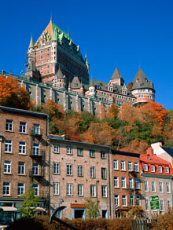

The Seven Wonders of Canada
The Canoe | The Igloo | Niagara Falls | Old Québec City | Pier 21, Halifax | Prairie Skies | The Rockies
Old Québec City, Québec
Quebec City is the capital of Quebec and, after Montreal, the second largest city in the province. Quebec's Old Town (Vieux-Québec) is the only North American fortified city north of Mexico whose walls still exist. It was declared a UNESCO World Heritage Site in 1985, as the "Historic District of Old Quebec". Founded in the early 17th century by French explorer Samuel de Champlain, la vielle capitale celebrated its 400th anniversary in 2008, and its history shows. In Quebec's Upper and Lower Towns, above and below the cliff, you can find at least 11 architectural styles, ranging from Classical Revival (1790-1820) to International Style (1930-1965). The area is also home to the Plains of Abraham, where a pivotal battle between the French and English in 1759 shaped the future of North America.